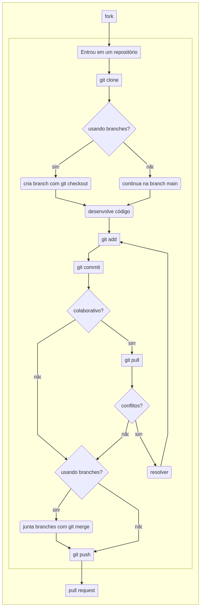
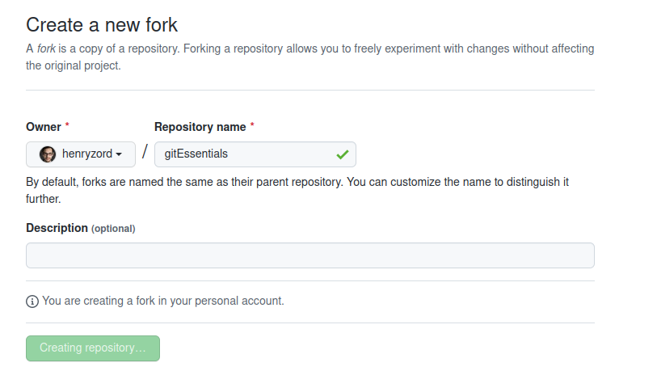
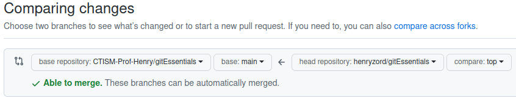
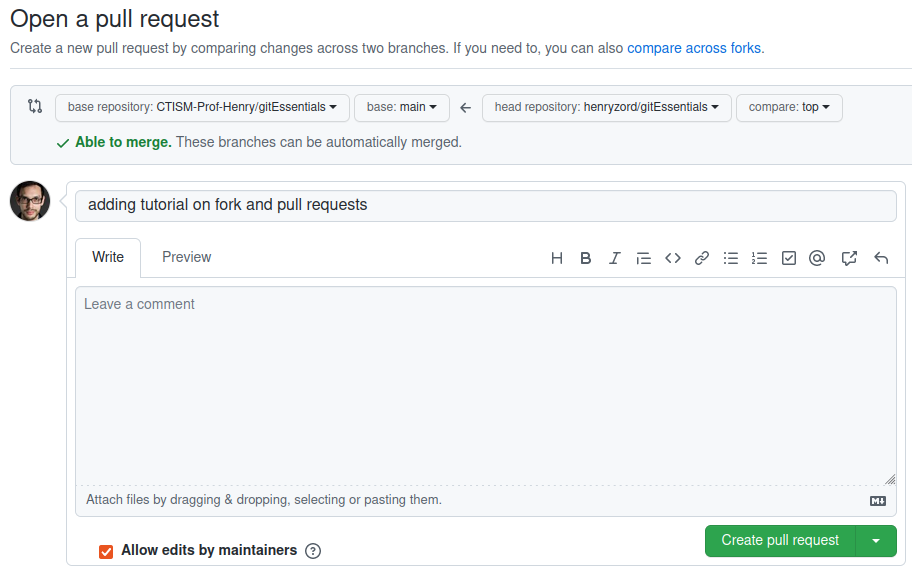
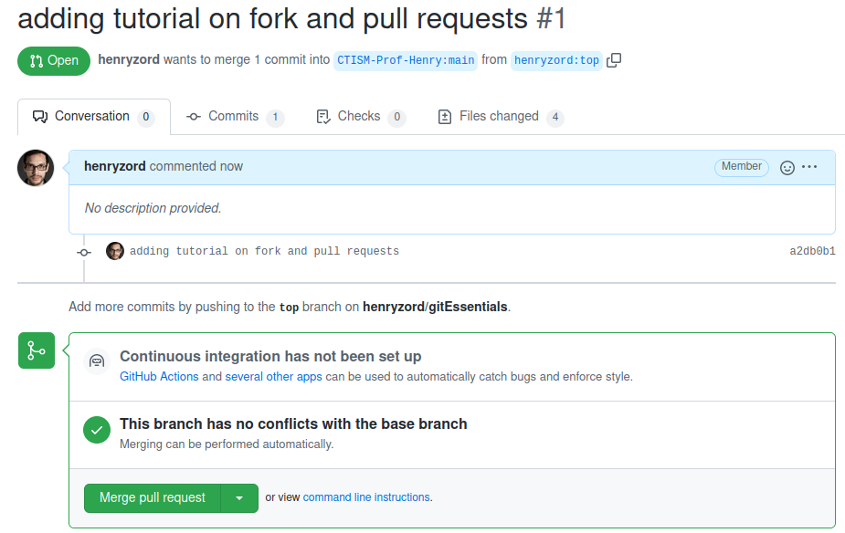

Fazendo fork e pull requests¶
Uma das principais características do git é servir para o desenvolvimento de código-fonte colaborativo; ou seja, quando várias pessoas trabalham no mesmo código-fonte, ao mesmo tempo.
O git fornece os meios necessários para coordenar o trabalho, de forma que o caos não se instale.
Uma das modalidades de colaboração com o git é quando fazemos fork em um repositório. Um fork é um mecanismo de colaboração em que copiamos o repositório de outra pessoa (fork), fazemos modificações nele, e enviamos de volta à pessoa (pull request), para que ela avalie se quer integrar nossas melhorias ao seu código ou não.
Um fork efetivamente cria uma cópia do repositório da outra pessoa na nossa conta do Github. Dentro da nossa cópia do repositório, inclusive, várias pessoas podem estar trabalhando juntas.
Fluxograma¶
O fluxograma de trabalho quando estamos trabalhando com forks e pull requests é o seguinte:

Passo-a-passo¶
Entrar na página do repositório que deseja-se fazer o fork, no github. Vamos chamá-lo de
https://github.com/CTISM-Prof-Henry/gitEssentialsClicar no botão “fork”, no canto superior direito:
Confirmar que deseja-se fazer fork na tela que aparecer:

Clonar o repositório que foi recém criado (a cópia, não o original) com
git clone. Por exemplo, se eu, henryzord, fizer um fork do repositório gitEssentials (que pertence à conta CTISM-Prof-Henry), a URL do meu repositório copiado seráhttps://github.com/henryzord/gitEssentials, e o comando a ser dado é
git clone https://github.com/henryzord/gitEssentials
Criar uma nova branch local, e mudar para ela:
git checkout -b <nome da branch>. Supondo que eu queira criar uma nova branch de nome top, o comando a ser dado é
git checkout -b top
Notificar o git de que este repositório relaciona-se com o repositório original:
git remote add upstream <url do repo original>. No exemplo, ficaria
git remote add upstream https://github.com/CTISM-Prof-Henry/gitEssentials
Fazer as modificações necessárias no código-fonte (editar, deletar ou criar arquivos)
Adicionar arquivos com
git add:git add ., por exemploSalvar modificações com
git commit -m "mensagem"Dar um
git pullpara atualizar o repositório local com as modificações do repositório remoto originalEnviar modificações para o repositório copiado, em uma branch remota que será criada, chamada top:
git push -u origin topDepois que você enviar as modificações para o seu repositório copiado, você pode acessá-lo pelo Github. Você perceberá uma mensagem na tela inicial, mostrando o quão atualizado seu código deste repositório está em relação ao código do repositório original:

Nós iremos enviar as modificações que fizemos no repositório copiado para o repositório original. Atenção: faça isso apenas quando você tiver terminado de fazer todas as modificações necessárias no seu repositório copiado.
No seu repositório copiado, como mostrado na figura acima, clique no botão Pull requests
Clique no botão new pull request:
Abrirá uma tela que irá comparar o seu código-fonte copiado com o código-fonte original. Como a visualização padrão do Github é para a branch main, não irá mostrar nada significante, pois criamos uma nova branch top:

No seletor do repositório copiado, mude para a branch top:

Clique no botão create new pull request:
Neste passo você pode escrever uma mensagem para o administrador do repositório original, explicando as modificações que foram feitas no pull request. Depois de escrever sua mensagem para ele, clique em create pull request.

Esta tela é o que o administrador do repositório original verá, no Github dele:

Se ele aceitar suas modificações, elas serão integradas ao repositório original. Você poderá vê-las na lista de commits do repositório original.